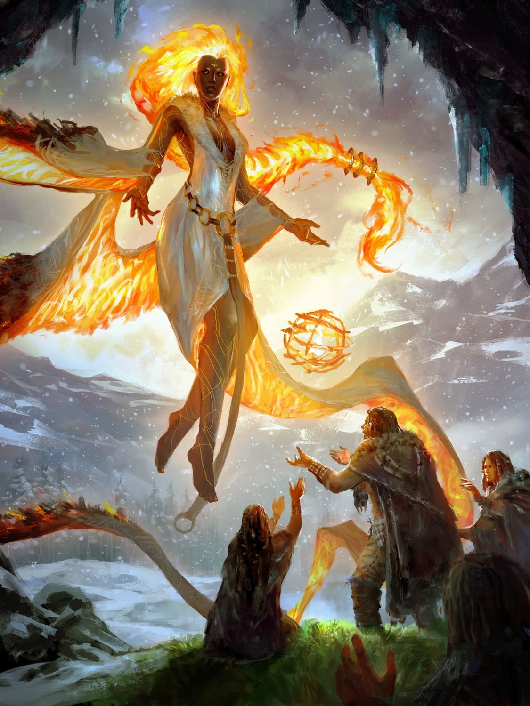

The Nation of Ipata
General Information
The Nation of Ipata is the most southern landmass in Ariaunus. In terms of land surface area Ipata is the second largest landmass, second only to Bruxduvia. Ipata's closest neighbour is Droomadia but economically its ties to
Troson are much stronger, having been one of the few places to not interrupt trade to Troson following the rebellion. Ipata is also noteworthy for being the only government that is elected via
Divine Right. Ipata is the most spiritual of all the nations, and clergy of all gods travel here to practice meditation, force of will and to deepen their connection to their diety. All religions are free to practice here.*
Climate: Desert/Rainforest
Population: 2.5 million
Government: Divine Right
Ruler: Theoris Atiyeh (Arazni's Icon, see Government)
Capital City: Shel Nagil
Ancient History
The Nation of Ipata is one of the oldest in Araiunus. Early settlers have been found in the east dating back to 2500 BA (Before Ascension). People quickly began expanding west, setting up villages that would eventually become major cities.
The oldest settlement found so far can be found downstream from the current capital city, Shel Nagil. Life in this time was not easy for people. The deserts are harsh, with scarce amounts of water and food. They seemed to
stick to the coasts of the island, close to the ocean. Settlements that have been found show a lack of permanency, possibly indicatign they were only small stops on a laarger journey. The next settlement with some staying power
is found in the far west, in the rainforests. The earliest record of government in Ipata date back to 2300 BA, where there are reports of a lineage of chiefs in a small Dresnan sanctuary in the west.* Government
as is familiar to Ipatans today however does not appear until roughly 1800 BA. The Divine Right began in 1802 BA when the Icon of Sarenrae Tet-anhur Nishim won the Contest put forward by Lymaris, The Spoken Word
and thus becoming the First Sovereign. They then spent the next 4 years searching the lands for the perfect place to build their capital and finally settled on the site that would one day become Shel Nagil. 6 years after this however, they were
approached by the Icon of Calistria who had lost the Contest previously. Here she claimed she was given a vision by Calistria telling her Icon to rechallenge Tet-anhur for the title of Sovereign. Tet-anhur accepted the challenge and thus the Contest of
Icons was truly born.

Post-Pain History
This period of unrest has been dubbed by Scholars as the Age of Pain. It lasted from Mandisa's ascension to Sovereign in 1059 until her death in 711 BA. The exact circumstances of her death are unknown but popular stories state that she drowned while sailing down a river.
People often attribute this event as an act of divine punishment from Gozreh, but this is unconfirmed. Others say she was likely assassinated by someone via poison and her body dumped in the river. Opponents to this idea proport the reports of regular poison
drinking she did to build up immunity. Regardless, her body is yet to be found to this day. In the wake of her death, a power vacuum opened up in Ipata, primarily between 5 parties and their associated gods: Zon-Kuthon (red), Dresna (blue), Shelyn (green),
Gorum (grey) and Calistria (yellow). Gorum's forces quickly descended on Ipata in 710 BA, hailing from modern day Bruxduvia. They swept through the relatively uninhabited central desert and claimed it for themselves.
Calistria's worshippers had been steadily growing in size following Mandisa's death, and when Gorum's forces swept through they simply bided their time. Then in 707 BA once Gorum's forces where deep in the south they made themselves known but taking territory from them. Dresna and Shelyn have long had strong ties to the west, in the thick rainforests. Even during Mandisa's reign, they stubbornly held out in their belief as
the capital far to the east held little power over the rainforests in the west. Shelyn's worshippers quickly got added to the Dresnan ranks as both groups held high respect for each other and similar ideals in 706 BA. Meanwhile, Zon-Kuthon still held a lot of political power in the western capital
of Shel Nagil and successfully repelled Gorum's forces.

Government and Faith
The "government" of Ipata is wholly unique among Araiunus. Politicians are not elected nor is power passed down via family. Instead Ipatans engage in a form of government they call "Divine Right". Once every 10 years, all the clergy
in Ipata gather together with others of their faith. Then they wait together for the Choosing. Each god Chooses one of their faithful to be their representative in Ipata, often called their Icon. This process occurs over a period of 1 week.
When this period has passed, all of the Icons must meet up with the current ruler of Ipata, so they may reveal what the Contest of Icons will be this time.
The Contest of Icons is a series of challenges that each Icon must partake in if they wish to govern Ipata. There is no set list of what is and is not allowed in the Contest of Icons, but death and grievous bodily harm are discouraged. Regular
bodily harm is allowed. The specifics of the Contest change every time it happens, as they are decided by the current ruling Icon. Once the Contest has wittled down and a winner is successfully chosen, they are elected to the position of Sovereign,
which makes them the leader of Ipata for the next 10 years. They can elect to bring along as many people as they wish as counsel or ministers, but it is a tradition that they recruit some of the runners up. Recruiting others of their own faith is
highly illegal. For example, the current Soveriegn is Theoris Atiyeh, who was Arazni's Icon. Once she won the Contest of Icons and became Sovereign, she recruited several of her fellow Icons to act as her ministers, but none who also worhsip Arazni.
This is done to keep the influence of any one god to a minimum, and to encourage Icons to befriend others during the Contest. After this point, the Sovereign acts essentially as a king, but with a notably more holy role. It is not uncommon for religions
to make their Icon/Sovereign a high ranking member in their church, or even the leader of said church.

When taking the role of Sovereign, one must perform some kind of ritual to lay out instructions for what must happen upon their untimely death. Examples include, having the instructions magically imbued into an object that is guarded, having it carved into the
walls that can only be revealed upon death or hiding it in a dream. As the Sovereign they are the ruler of Ipata, but usually they are not treated like kings. Instead they are more similar to a high rnaking member of the clergy, who advices others
on how the country should be run. Of course, the Soveriegn's word is final, but they hardly ever see themselves as a ruler. During their reign as Sovereign, it is common for plenty of those who worship other gods to partake in ceremonies dedicated to the
Sovereign's diety. On specific feast days for example, over half the city partakes despite only a fraction of them being worshippers. People do this as they believe showing worship to other dieties is a crucial step to enlightment, others say it is always
good to see things from a different perspective and at least one person says "because I was bored". Regardless of the reason, these days of religious importance become very large affairs in Shel Nagil. Members of the Sovereigns faith even travel to the city
for the festivities.